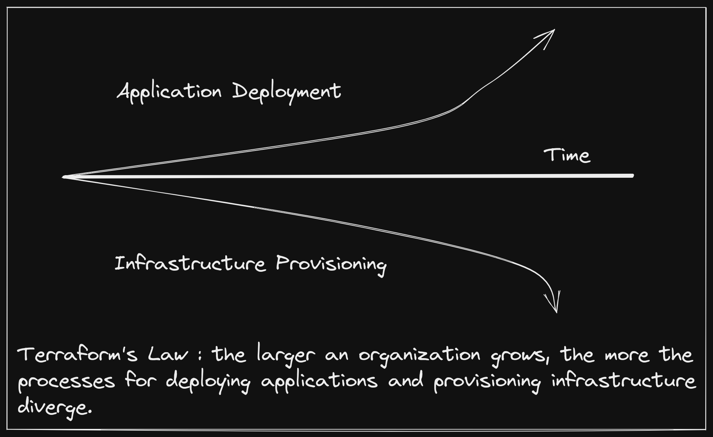
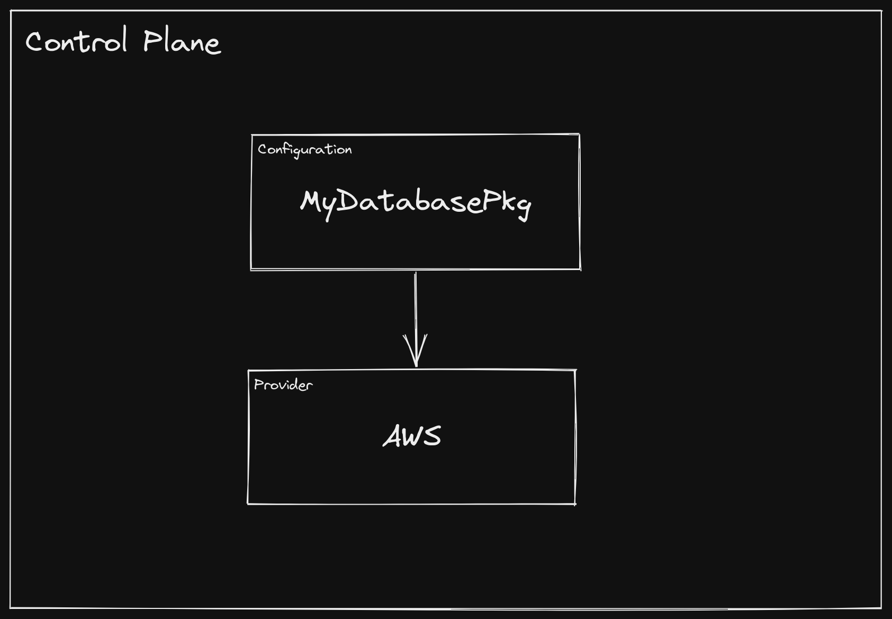
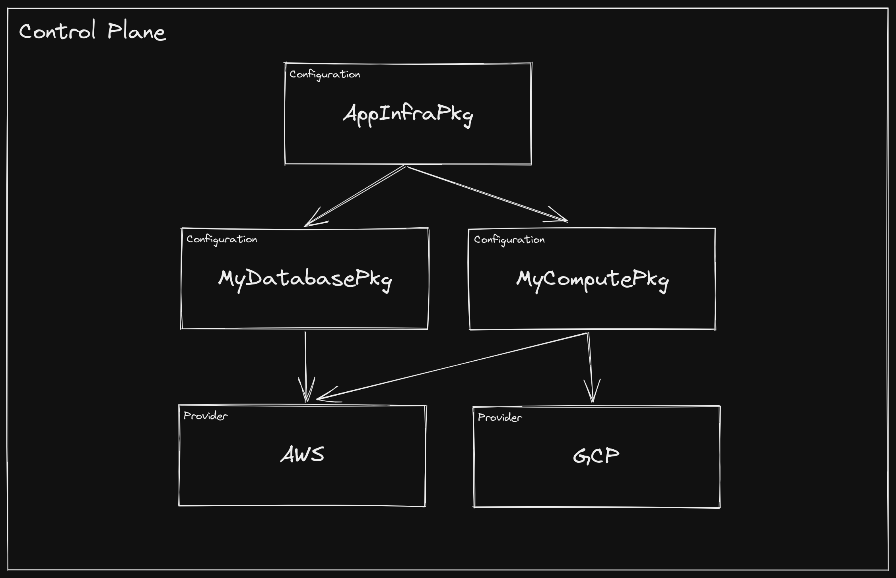
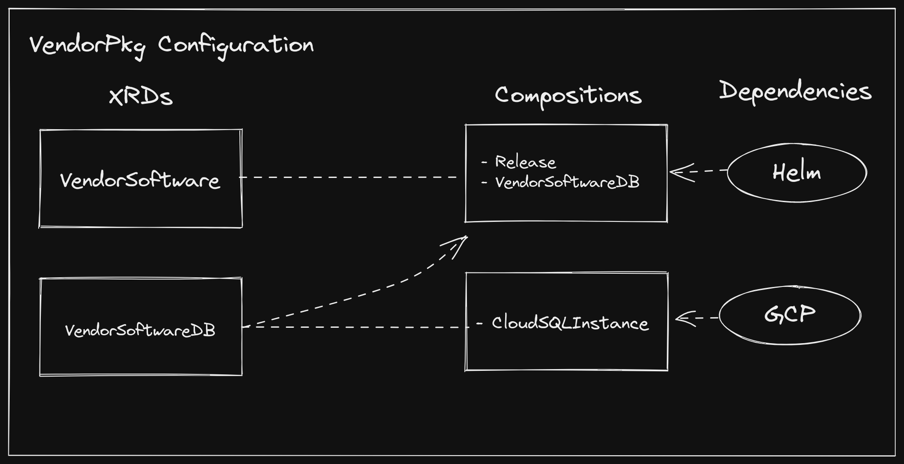
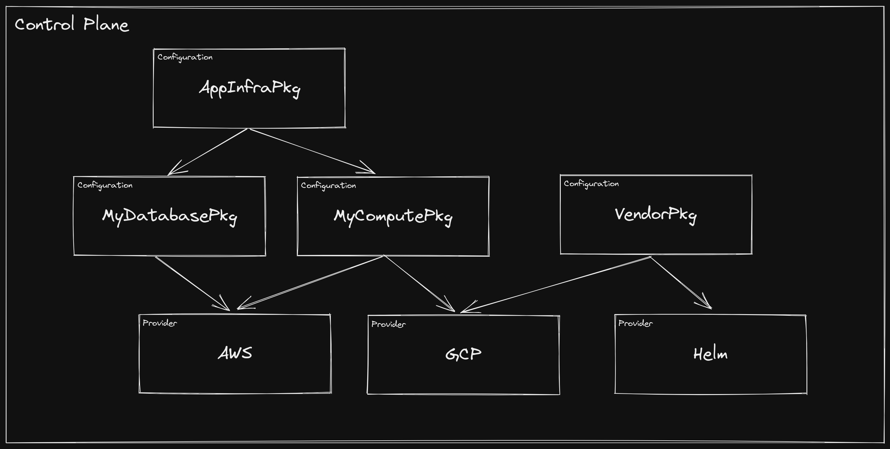
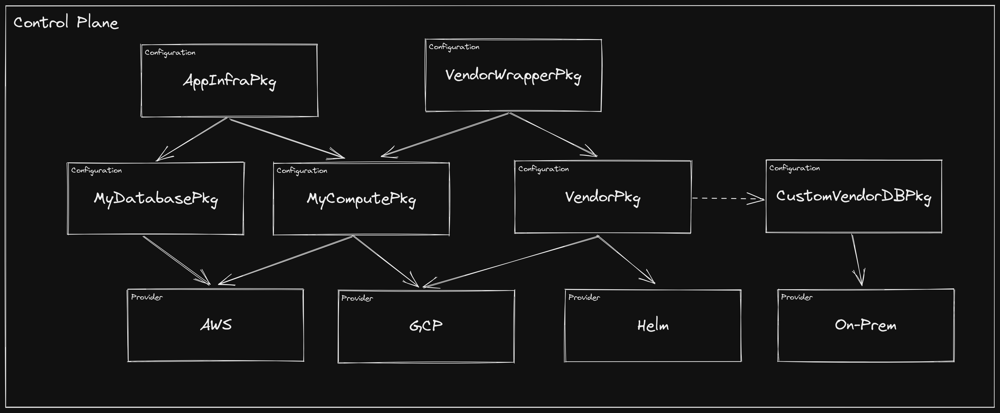

This post explores what a future of shipping infrastructure alongside software may look like by detailing where we are today, and evaluating how the delivery of software has evolved over time. If you just want the big ideas, skip to the final section: A New Kind of Software Marketplace.
Almost all software depends on infrastructure. Installation documentation typically has a section detailing how to run with your favorite cloud provider managed services, and, if you’re lucky, may even include a script to provision that infrastructure for you. The best documentation makes the process of initially setting up the required infrastructure relatively painless, but will still fall short of ongoing management, upgrade, and migration of that infrastructure.
Software itself used to also be more like this: easy to install, but hard to keep running. Kubernetes has done a lot to improve this story by creating a common application deployment target API that vendors can rely on to keep their software running in a customer environment. Primitives and interfaces that Kubernetes provides around networking, storage, and runtimes mean that a single bundle of software can run effectively on heterogenous clusters.
However, as soon as you take one step outside of the Kubernetes API, this operational nirvana begins to break down. Disparate processes for deploying your software and provisioning the external infrastructure it relies on evolve independently, and a simple setup like connecting an application to a managed database service becomes cumbersome. Many have tried to bridge this gap by also deploying their infrastructure as workloads within the Kubernetes cluster. The problem is, when we do this we throw away more than two decades of work that cloud providers have done to run managed infrastructure with absurd levels of reliability and minimal burden on the consumer.

This is not a shot at Terraform, but rather an acknowledgement of a common trend in most organizations, with Terraform being the most widely adopted and successful tool in the infrastructure provisioning space over the last decade.
This leaves us between a rock and a hard place where we must choose to divorce our infrastructure management from the management of applications that consume them or we must take on the relatively colossal effort of running the infrastructure ourselves.
Dynamically Linked Infrastructure Link to heading
The relationship between software products and their infrastructure dependencies today feels not so different from dynamically linked binaries, a practice we have started to move away from as an industry. Though static linking is perhaps more prevalent than it once was, dynamic linking still has some real advantages, some of which include:
- Smaller binaries (space)
- Ability to upgrade a dependency once for all dependents (security)
- No need to recompile a binary after dependency upgrade (time)
For these advantages to not be completely mitigated by the potential of encountering dependency hell, there needs to be a strong API contract between the application and its dynamically linked libraries.
I am not a dynamic linking advocate when it comes to software, but, like almost any strategy, there is a time and place for it.
Static and dynamic linking of binaries deals with a choice between build time and run time. When working with software packaging, we distinguish between package time and deploy time. Though not exact parallels, these stages share similar properties, particularly that deferring to run time and deploy time generally provides more flexibility to the consumer, and, in turn, more opportunity to make mistakes. One of the reasons we have moved towards statically linked binaries is the general sentiment that the builder has more domain expertise than the consumer. This is not necessarily true for infrastructure, where provisioning steps are highly dependent on an organization’s unique environments, and software consumers have more context than builders. This is one reason why we use more of a “dynamically linked” approach in this realm.
Another is that the the API contracts between software and infrastructure are mostly established and well-defined. These APIs typically come in the form of protocols, such as MySQL, which enables consumer choice between a wide variety of managed services, such as RDS and CloudSQL. Most would agree this works fairly well, and moving to a more “statically linked” approach, such as shipping a full database alongside an application would be a bad idea. When it comes to infrastructure dependencies, the benefits of dynamic linking - smaller packages, the ability to independently upgrade infrastructure, and no requirement (usually) to repackage software due to infrastructure changes - feel like the right tradeoffs.
Unfortunately, the way we link software to its infrastructure dependencies doesn’t explicitly declare a relationship like the undefined symbols in a dynamically linked binary do. Instead, we manually document requirements, try to give helpful error messages, or fly someone across the country to a company’s headquarters to help them setup their environments for the software.
While statically linked infrastructure does not make sense, we can move towards another packaging goal: completeness. When software is downloaded, it should contain or require everything it needs to run, and if it doesn’t, it should let you know as early as possible. A complete package moves us from failing while running the software to failing while deploying the software.
The provisioning process for software infrastructure dependencies today encompasses few of these traits. Because the dependant software is totally unaware of the infrastructure provisioning process, it will, at best, proceed until it is unable to function, and, at worst, proceed and function incorrectly. For most of the history of packaged software this has been unavoidable. Infrastructure environments are far too differentiated between organizations for it to be feasible for a vendor to distribute dedicated packages for each.
So what options does this leave us? Fortunately, a movement toward internal control planes, first popularized by the hyper-scalers, is starting to permeate technology organizations. In the first part of this post, we talked about how Kubernetes has automated many aspects of workload operations. In a way, packaging software as a Helm chart, or other Kubernetes manifest bundle, has allowed us to dynamically link software deployment machinery by creating a ubiquitous API, which papers over the heterogenous underlying nodes, network topology, etc. Using Kubernetes within an organization means that your software packages can be delivered as more complete units - not just ready to run, but ready to be scaled, upgraded, and connected.
We have moved closer to completeness, but the question of infrastructure provisioning remains unanswered. However, Kubernetes’ extension mechanisms have rapidly turned it into more than just a workload orchestrator - it has become a distributed systems framework, ripe for building control planes on top of. If we can extend the API to include infrastructure, we can use the same packaging, CI/CD systems, and development tooling to produce complete software packages.
A naive approach would be to take external APIs, let’s stick with RDS for now,
and represent it as a Kubernetes API object. This may work for some
organizations, but package builders would need to produce an “our software with
RDS” package, and an “our software with CloudSQL” package, and so on. It would
be akin to Kubernetes exposing separate API objects for LinuxAMD64Node,
LinuxARM64Node, etc.
A more robust strategy would be to follow Kubernetes convention and expose interfaces, for which there may be many implementations. Going one step further would be to allow for package builders to define the interface themselves, and potentially ship a few common implementations of that interface alongside their software. This would result in a package that, when deployed, would ensure the necessary infrastructure dependencies were in place, yet leave the granular configuration and policy to the consumer.
Crossplane: The Control Plane Framework Link to heading
If Kubernetes has becomes the de facto distributed system framework, then Crossplane is aiming to be the control plane framework built on top of it. Crossplane is comprised of three major concepts, which enable the packaging story described in the preceding section:
- Managed Resources: these are Kubernetes API objects that represent
external infrastructure APIs with 1:1 fidelity. Examples include
EC2Instance,GKECluster,CosmosDB, etc. - Composition: this allows for defining new higher-level interfaces, as well
as the composition of managed resources that implement an interface.
Interfaces are defined using a
CompositeResourceDefinition(XRD), and implementations are defined using aComposition. As you might guess, there may be an arbitrary number ofCompositionsfor any one XRD. The inner workings of composition machinery is described more completely in a previous post. - Packages: these are different than the software packages that we have been
discussing. They are the mechanisms for building a control plane, which,
defined broadly, is a directed acyclic graph
(DAG) of Crossplane
packages. There are two types of Crossplane packages:
ProvidersandConfigurations.
An organization may start building their control plane by defining a single
Configuration package. Let’s say developers need to be able to self-service
databases. The platform team may author a Database XRD, which only exposes the
fields they want developers to be able to configure.
Holy moly that’s a lot of YAML! I get it, the Kubernetes ecosystem is rife with walls of YAML. We are working on tooling to reduce the strain on Crossplane users authoring these resources. Stay tuned!
apiVersion: apiextensions.crossplane.io/v1
kind: CompositeResourceDefinition
metadata:
name: xdatabases.example.org
spec:
group: example.org
names:
kind: XDatabase
plural: xdatabase
claimNames:
kind: Database
plural: databases
connectionSecretKeys:
- username
- password
- endpoint
- port
versions:
- name: v1alpha1
served: true
referenceable: true
schema:
openAPIV3Schema:
type: object
properties:
spec:
type: object
properties:
parameters:
type: object
properties:
storageGB:
type: integer
required:
- storageGB
required:
- parameters
Then they will author one or more Compositions that dictate what
infrastructure is provisioned and how the configured fields on the Database
modify it.
apiVersion: apiextensions.crossplane.io/v1
kind: Composition
metadata:
name: database.aws.example.org
labels:
provider: aws
spec:
writeConnectionSecretsToNamespace: crossplane-system
compositeTypeRef:
apiVersion: example.org/v1alpha1
kind: XDatabase
resources:
- name: rdsinstance
base:
apiVersion: database.aws.crossplane.io/v1beta1
kind: RDSInstance
spec:
forProvider:
region: us-east-1
dbInstanceClass: db.t2.small
masterUsername: masteruser
engine: postgres
engineVersion: "12"
skipFinalSnapshotBeforeDeletion: true
publiclyAccessible: true
writeConnectionSecretToRef:
namespace: crossplane-system
patches:
- fromFieldPath: "metadata.uid"
toFieldPath: "spec.writeConnectionSecretToRef.name"
transforms:
- type: string
string:
fmt: "%s-postgresql"
- fromFieldPath: "spec.parameters.storageGB"
toFieldPath: "spec.forProvider.allocatedStorage"
connectionDetails:
- fromConnectionSecretKey: username
- fromConnectionSecretKey: password
- fromConnectionSecretKey: endpoint
- fromConnectionSecretKey: port
This
Compositiononly composes a single resource (RDSInstance), but an arbitrary number of resources may be included in a singleComposition.
Lastly, they will bundle the XRD and the Composition into a Configuration
package, defining any dependencies on other packages. For instance, the
Composition above provisions resources on AWS, so the Configuration package
should declare a dependency on the AWS Provider package.
apiVersion: meta.pkg.crossplane.io/v1
kind: Configuration
metadata:
name: MyDatabasePkg
spec:
crossplane:
version: ">=v1.0.0-0"
dependsOn:
- provider: crossplane/provider-aws
version: ">=v0.19.0"
The Configuration package is bundled as an OCI image that can be hosted on any
registry, and when it is installed into a Kubernetes
cluster
with Crossplane present, Crossplane will ensure that all dependencies are
installed and configured. From that point forward, a Database object can be
created in the cluster, and the infrastructure defined in the Composition will
be provisioned. If multiple Compositions are defined, one can be optionally
selected as a parameter to the Database object.
apiVersion: example.org/v1alpha1
kind: Database
metadata:
name: my-db
namespace: default
spec:
parameters:
storageGB: 20
compositionSelector:
matchLabels:
provider: aws
writeConnectionSecretToRef:
name: db-conn
At this point, the organization control plane looks like this:

Now when a developer goes to create and deploy their application Helm chart,
they don’t ask for the platform team to create a database and a Secret for
them to consume. They add a Database to their chart and it gets deployed
alongside their software, only giving them the knobs to turn that the platform
team has blessed.
Let the record show that I don’t actually recommend doling out infrastructure credentials via Kubernetes
Secrets, but, ya know, it happens.
This is a powerful concept, especially when you consider that the high-level
Database type itself can be included as a resource in a Composition for an
even higher-level XRD. Over time, an organization can continue to build out its
control plane by composing infrastructure and exposing it at various levels of
abstraction.

Each of the packages in the control plane above could be installed individually, in which case Crossplane’s package manager would ensure that valid dependencies exist and that the graph contains no cycles. However, a recommended strategy is to install a single, top-level “root package”, which contains no XRDs or
Compositions, but declares the first level of dependencies. This allows Crossplane to manage dependencies, all of which become ancestors of the root package, and upgrades can be managed from a single location.
An Opportunity for Software Vendors Link to heading
Working at a company that sells enterprise software, I can tell you firsthand that integrating a complex product into a customer environment can be time consuming and error prone. The difficulty arises from the fact that the builder knows best what kind of infrastructure the software requires, and the customer knows best how to provision infrastructure in their environment. This usually leads to the vendor requiring the lowest common denominator for infrastructure, and the customer trying and failing to set up the proper infrastructure a number of times, before eventually succeeding and getting something working, only to find out in a few months that it is not suitable for the workload.
In a world of dynamically linked infrastructure, vendors can instead require
infrastructure as part of their software packages. Let’s say a vendor has an
application that requires a MySQL database. They may author a Configuration
package with the following contents:
- An XRD named
VendorSoftware - A
CompositionforVendorSoftwarewhich includes a HelmReleaseandVendorSoftwareDB - An XRD named
VendorSoftwareDB - A
CompositionforVendorSoftwareDBwhich includes a GCPCloudSQLInstance - Dependencies on the GCP and
Helm
Providers

Earlier we talked about including an XRD-defined resource in a Helm chart to provision infrastructure alongside our software. Here we are bundling a Helm chart in a
Composition(via the HelmReleaseresource) alongside its infrastructure (VendorSoftwareDB). It can be confusing when determining how to deploy software when both of these options are available, but here we are treating the vendor software as part of our organization control plane, rather than software that consumes from it. This can be a good general rule of thumb when using Crossplane packages: if you are adding a new API to your control plane (as we are doing here), bundle the software in your Crossplane package. If you are consuming an API from your control plane, bundle the infrastructure in your software package.
There are a number of interesting patterns going on here, but one of note is the
fact that we define a separate XRD and Composition for VendorSoftwareDB,
rather than just including the CloudSQLInstance in the VendorSoftware
Composition directly. The reason is that the consumer now has an an
intermediate interface for the database infrastructure required by
VendorSoftware, thus enabling them to optionally define their own
implementation. If they are happy to provision a CloudSQL instance on GCP, they
only need to create a VendorSoftware instance and they get a vendor-tested
infrastructure configuration without any manual intervention. If they want to
supply their own VendorSoftwareDB compatible Composition, they can opt to
use it, while still provisioning it via the top-level VendorSoftware type.

Furthermore, they can add to the VendorSoftware by including it in a
Composition for a higher-level XRD. This can be especially useful in the case
that additional infrastructure needs to be provisioned every time an instance of
the software is deployed (e.g. custom firewall rules, DNS entries, etc.).

A New Kind of Software Marketplace Link to heading
So where does this leave us? In my mind, it is a fundamental reshaping of how we integrate new software into an organization. It is a vision of a world where taking a dependency on an enterprise product is quite literally just updating the list of dependencies in your control plane. It is an ecosystem and marketplace where large and small organizations can identify a need, find the best solution, and integrate it in days rather than months or years.
This model has a number of benefits outside of just improving time to deploy. For instance, when infrastructure is included in software packages, auditing those packages for security and compliance becomes easier. In a new software marketplace, vendors can have their packages pre-certified for standards such as FIPS and HIPPA. They can also offer multiple variations, giving consumers options such as “simple setup” and “globally distributed, production-ready deployment”.
Just like how GitHub has facilitated an ecosystem where organizations can consume software and contribute back, this new marketplace will provide the same opportunities for control plane components. For example, if a vendor offers a package that supports provisioning AWS infrastructure alongside their software, a consumer can take that package and either fork it or wrap it with support for GCP.
Likewise, vendor collaboration and integration becomes drastically easier. If I provide software that depends on a database, and you provide a database solution, you can take my package and add an implementation that relies on your product, then publish it for users to consume.
We most certainly have not arrived at this future though. While the primitives are established, tooling, specifications, and most importantly a community of builders and users are still growing and maturing. It takes a village, and all are welcome!
Send me a message @hasheddan on Twitter with any questions or comments!